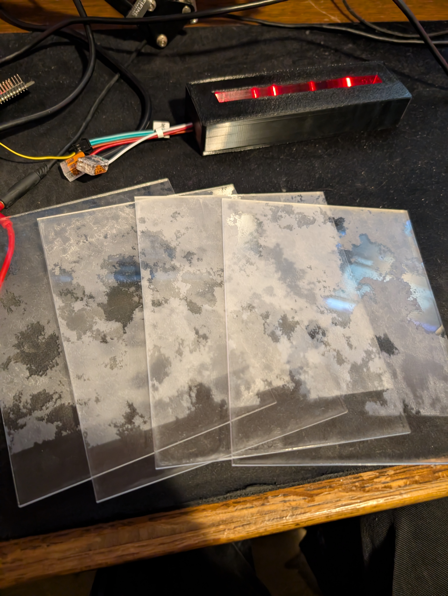
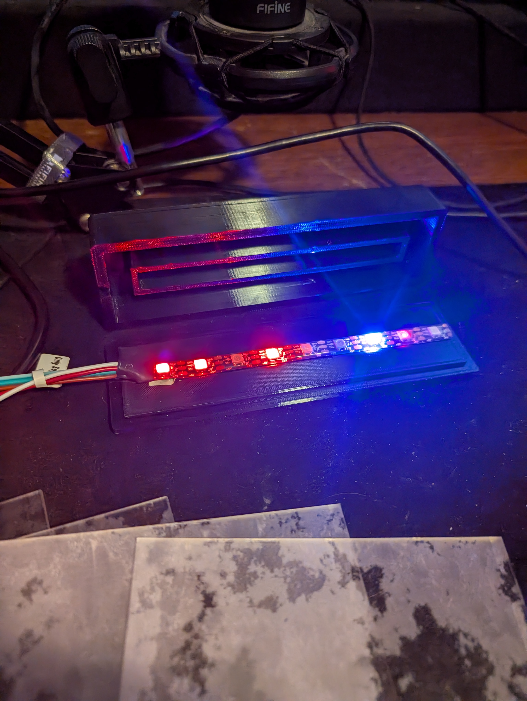
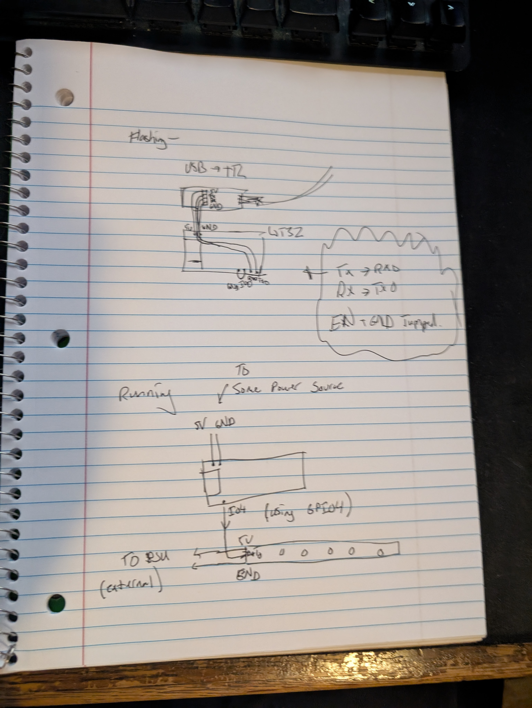
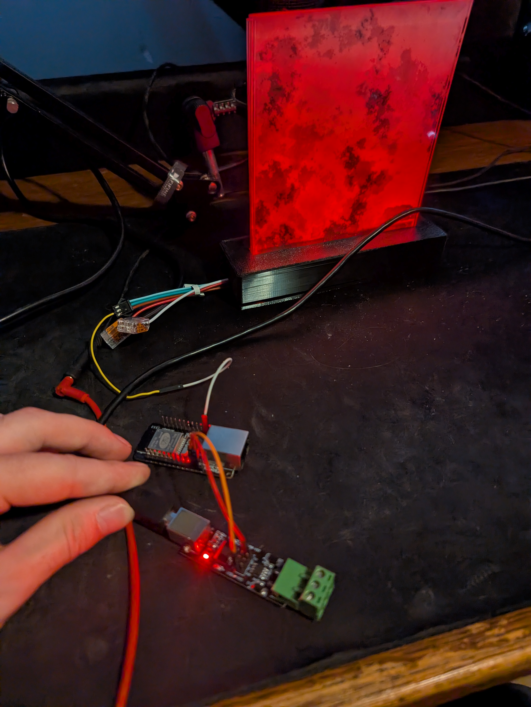

project 3 blog post
Background
The goal of project 4 was really, to make something. The open ended nature of project 4 resulted in me really wanting to further develop one of my past projects and turn it into a more functional, more controllable version.Lighting up Acrylic?
A few weeks ago I learned about the properties and effects of acrylic panels when they are lit from the side and was captivated by the effect, and really wanted to further this development with the lighting techniques that I was using in project 3 with WLED and the tube lights. Specifically, I wanted to use the edges of acryllic to highlight accents and make a shape appear “out of thin air.” Ultimately, I wanted to make more of a stationary art piece that could be displayed in the corner of my room or showed off to others, and also swapped with different display pieces to have different displays.Prototyping
First, I started with developing the system and sketching exactly how I wanted the layout of the display to look. I ended up settling on a slot-style system that would have you slot in pieces of laser cut acrylic into a baseboard that would house the LEDS and uplight it. This would allow for pieces to be interchangeable for other designs and also would make the tiles stand out a bit more from the base.Parts
- WT32-eth01
- 5v 10A PSU
- ARGB LED Strip
- 1/8in Acrylic Sheet
- Usb -> RS485 Converter
Laser Cutting
After figuring out how exactly I wanted the design to look, I laser etched and cut four sections of acrylic with a pattern that I had generated from 3d simplex noise in touchdesigner, animated and offset in the z direction. I took four separate subsections and etched each respective section onto a piece of acrylic. When layered, this would give the visual effect of there being a cloud or volumetric figure in the air!Slight Warping
After designing and cutting the acrylic panels, I remeasured dimensions because the 60w laser cutter that I was using still have a bit of drift and doesn’t perfectly cut dimensions to what I input. Thankfully everything was very similar and lined up nicely, besides a small amount of warping from the heat of the laser, everything was in order to start modelling and 3d printing an enclosure. The Four Frame Segments.
The Enclosure
I started making the enclosure in tinkercad and my roommate promptly stopped me and said “learning fusion 360 will make your life so much easier,” so that was yet another application that came together for making a completed product. The enclosure was subsequently modelled in fusion 360 and printed on a bambu lab a1 mini. The Four Frame Segments.
Flashing the WT32
With the enclosure and acrylic set up, I started working on the LED system, which would be inspired by the controller that I had used with project 3. While project 3 was built on an esp32 devkit, I had recently gotten a WT32-eth01 that would allow for me to send artnet packets over ethernet rather than wirelessly, resulting in much less packet loss and a more reliable lighting system. The only issue with this was the lack of usb or similar ports on the WT32- this resulted in me learning the processes on manually flashing microcontrollers. I had a usb -> rs485 converter that I had on hand and without the jumpers, it would become a simple usb -> ttl that could be used for communicating with esps and other microcontrollers. By hooking up tx to tx on the esp and rx to rx on the esp and 5v and gnd (and bridging en to gnd on the esp) I was able to flash the esp using serial communication without a usb port natively on the microcontroller. The process for flashing smaller and more standalone micronctrollers was not a scary as I had previously thought and honestly seems more reliable to me. A hand-drawn diagram for flashing and running configs.  USB -> TTL -> WT32
Networking...
With WLED properly flashed and functional, I could then control the way the acrylic was lit up the same way I had in project 3. However, I could now attempt to set up ethernet control. I was able to set up the esp32 wirelessly and control it using the wled app on my phone, but configuring the ethernet capabilities was a bit more complicated. I found myself struggling with directly connecting the esp to my laptop as it would not show up in my device registry. I figure that I need a bit more time to fully troubleshoot and figure out more about networking and DHCP settings. Nonetheless, I feel like a got significantly more familiar with networking and networking fundamentals when setting up the WIFI and routing packets from my laptop to the ESP for external control from softwares! With some basic animations!
With some basic animations!